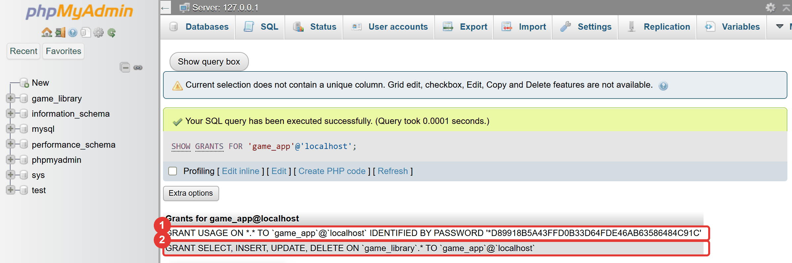
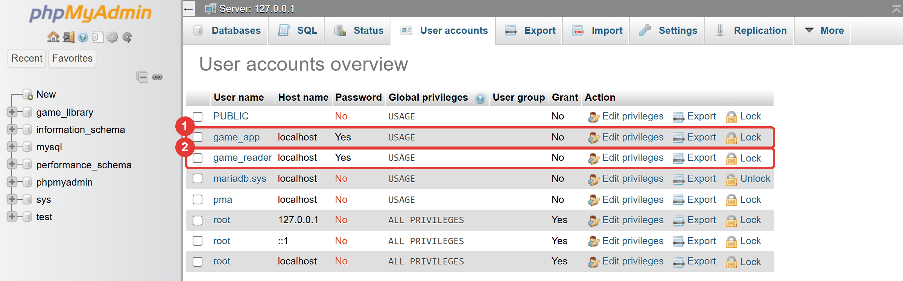
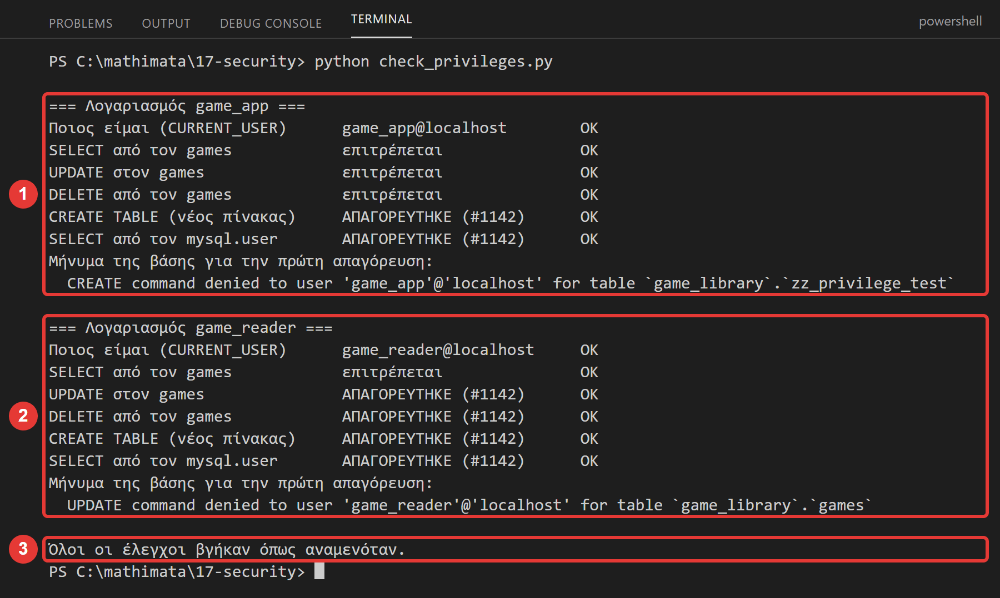
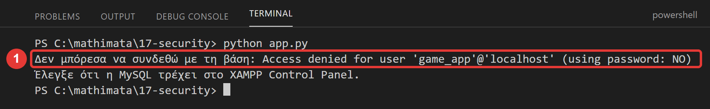
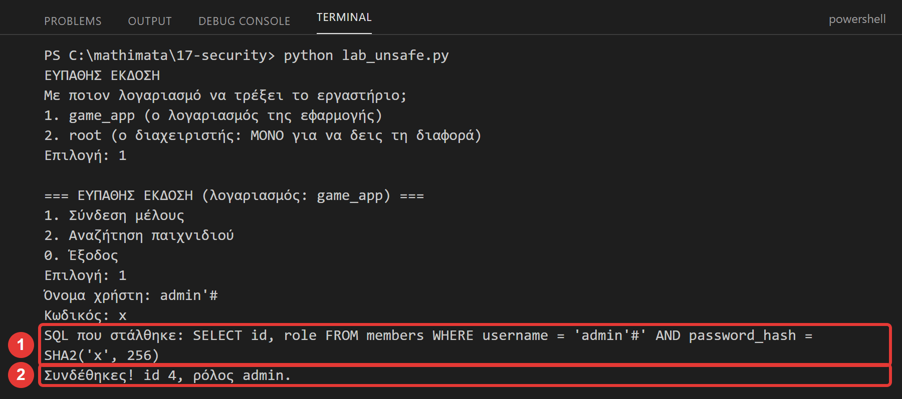
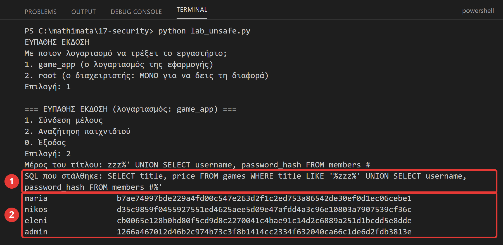
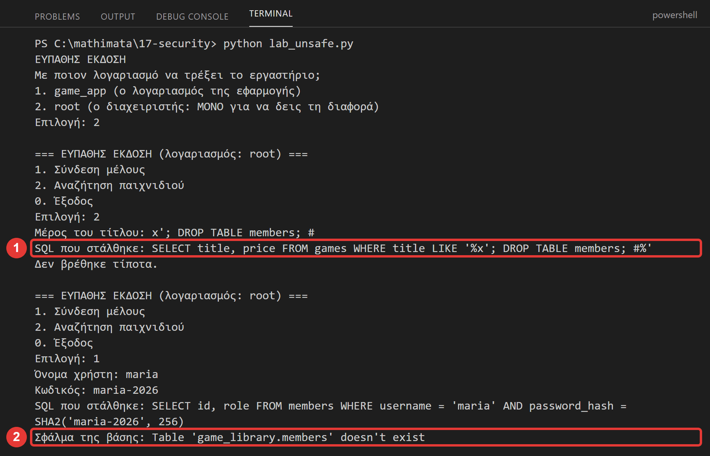
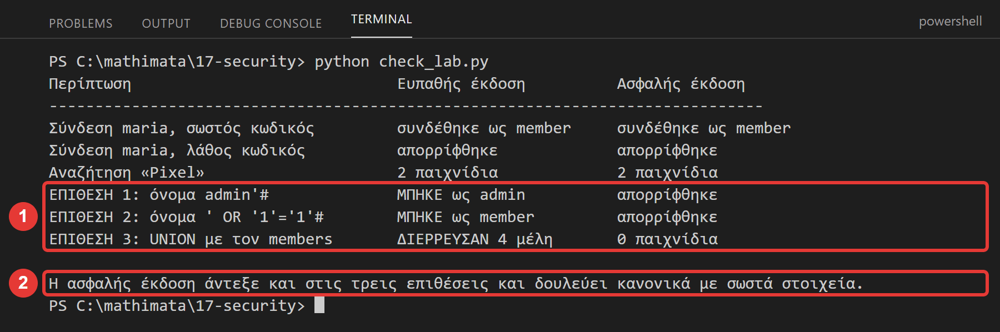

Μάθημα 17: Ασφάλεια: λογαριασμοί, δικαιώματα και SQL injection¶
Βάση δεδομένων και Python: λογαριασμοί MariaDB (CREATE USER, GRANT), η αρχή των ελάχιστων δικαιωμάτων, κωδικοί έξω από τον κώδικα και το SQL injection (επίθεση και άμυνα)
Διάρκεια: 2 κύκλοι × περίπου 45′ εργασία (2 διδακτικές ώρες)
Φύλλο εργασίας
Αυτή η σελίδα εξηγεί τις έννοιες. Οι ασκήσεις και οι οδηγίες για κάθε κύκλο βρίσκονται στο Φύλλο εργασίας 17. Δούλεψε με τις δύο σελίδες ανοιχτές.
Αρχεία εργαστηρίου¶
| Αρχείο | Κύκλος | Τι είναι |
|---|---|---|
| 01-start-state.sql | πριν αρχίσεις | η βάση όπως τελειώνει το Μάθημα 16 |
| 02-users.sql | 1 | νέο, με κενά |
| config.py, db.py | 1 | αλλάζουν, με κενά |
| config_local.example.py | 1 | νέο, το αντιγράφεις ως config_local.py |
| check_privileges.py | 1 | νέο, έτοιμος έλεγχος |
| report.py | 1 | αλλάζει, με κενά |
| queries.py, ui.py, app.py, reports.py, export.py | 1 | ίδια με τα Μαθήματα 15–16 (δεν έχουν κενά) |
| 03-members.sql | 2 | νέο, έτοιμο |
| lab_menu.py, lab_unsafe.py | 2 | νέα, έτοιμα |
| lab_safe.py | 2 | νέο, με κενά |
| check_lab.py | 2 | νέο, έτοιμος έλεγχος |
Η αποστολή¶
Μέχρι σήμερα όλα τα προγράμματά μας συνδέονται ως root, χωρίς κωδικό. Ο root μπορεί τα πάντα: να σβήσει όλες τις βάσεις του υπολογιστή, να διαβάσει τα δεδομένα όλων και να δώσει
δικαιώματα σε οποιονδήποτε. Αν ένα πρόγραμμα με τέτοια δύναμη έχει ένα λάθος, ή κάποιος το εκμεταλλευτεί, το λάθος έχει όλη τη δύναμη του root.
Σήμερα κάνουμε τα προγράμματά μας πιο ασφαλή με δύο τρόπους:
- Λογαριασμοί με λίγα δικαιώματα: ένας λογαριασμός για την εφαρμογή, ένας για τις αναφορές, και οι κωδικοί τους έξω από τον κώδικα.
- Άμυνα στο SQL injection: θα επιτεθείς σε ένα δικό μας εργαστηριακό πρόγραμμα, θα δεις τι μπορεί να πάθει μια βάση, και θα το προστατέψεις.
Στο τέλος θα μπορείς¶
- να εξηγείς γιατί ένα πρόγραμμα δεν πρέπει να συνδέεται ως
root(η αρχή των ελάχιστων δικαιωμάτων). - να φτιάχνεις λογαριασμό με
CREATE USER … IDENTIFIED BYκαι να δίνεις και να ελέγχεις δικαιώματα μεGRANT,SHOW GRANTS,REVOKE. - να διαβάζεις τα σφάλματα #1045, #1044 και #1142.
- να κρατάς τους κωδικούς έξω από τον κώδικα (
config_local.pyκαι.gitignore). - να εξηγείς τι είναι το SQL injection και να αναγνωρίζεις τρεις τύπους του: παράκαμψη σύνδεσης, κλοπή δεδομένων με
UNION, καταστροφή δεδομένων. - να το αποτρέπεις με παραμέτρους (
%s) και να εξηγείς γιατί η άμυνα έχει πολλά στρώματα.
Πριν αρχίσεις¶
- Ξεκίνα τη MySQL και τον Apache από το XAMPP Control Panel.
- Φτιάξε έναν φάκελο
17-securityμέσα στον φάκελο των μαθημάτων και κατέβασε εκεί τα δεκαεπτά αρχεία του πίνακα. Κράτησε ακριβώς τα ονόματα. Όλα τα.pyστον ίδιο φάκελο, όπως στο Μάθημα 15. Άνοιξε τον φάκελο στο VS Code και άνοιξε τερματικό. (Αν έχεις ακόμη τον φάκελο του Μαθήματος 16, μπορείς να τον αντιγράψεις και να κατεβάσεις μόνο τα νέα και τα αλλαγμένα αρχεία, που αντικαθιστούν τα παλιά.) - Φέρε τη βάση στην κατάσταση εκκίνησης: στο phpMyAdmin επίλεξε τη βάση
game_library, άνοιξε την καρτέλα Import, διάλεξε το01-start-state.sqlκαι πάτα Import. - Έλεγξε στην καρτέλα Browse ότι ο
gamesέχει 30 γραμμές, οgenres11, οreviews12, οplatforms5 και οgame_platforms63.
Το αρχείο εκκίνησης σβήνει τα δεδομένα σου
Το 01-start-state.sql σβήνει τους πίνακες της βάσης και τους φτιάχνει από την αρχή. Δεν αγγίζει τους λογαριασμούς που θα φτιάξεις σήμερα, γιατί αυτοί ανήκουν στον εξυπηρετητή και όχι στη βάση.
Αν χαλάσεις τον πίνακα members (Κύκλος 2), τρέξε μόνο το 03-members.sql.
Επιθέσεις μόνο στο δικό σου εργαστήριο
Σήμερα θα δοκιμάσεις επιθέσεις, αλλά μόνο στο πρόγραμμα lab_unsafe.py και στη δική σου βάση. Η δοκιμή τέτοιων επιθέσεων σε σύστημα που δεν είναι δικό σου (ένας ιστότοπος, η βάση του σχολείου,
η εφαρμογή ενός φίλου) είναι παράνομη, ακόμη κι αν «απλώς δοκιμάζεις». Στόχος είναι να καταλάβεις πώς προστατεύεσαι, όχι να βλάψεις κάποιον.
Ο κύκλος εργασίας
Πρόβλεψη → εκτέλεση → σύγκριση → εξήγηση. Σήμερα πρόβλεψε ποιο σφάλμα θα δώσει η βάση όταν ένας λογαριασμός ζητά κάτι που δεν επιτρέπεται, και τι θα κάνει το πρόγραμμα όταν ο χρήστης γράψει κάτι «περίεργο».
Κύκλος 1 — Λογαριασμοί και δικαιώματα¶
Σε αυτόν τον κύκλο φτιάχνεις δύο λογαριασμούς με λίγα δικαιώματα και τους χρησιμοποιείς από την Python.
1.1 Το πρόβλημα: όλα ως root¶
Στο phpMyAdmin τρέξε:
Η απάντηση είναι root@localhost: ο διαχειριστής της βάσης, ο οποίος στο XAMPP δεν έχει κωδικό. Όλα τα προγράμματά σου συνδέθηκαν ως αυτός. Το πρόγραμμα όμως χρειάζεται λίγα: να διαβάζει, να προσθέτει, να αλλάζει και
να σβήνει γραμμές στους πίνακες της game_library. Δεν χρειάζεται να φτιάχνει ή να σβήνει πίνακες, να διαβάζει άλλες βάσεις ή να φτιάχνει λογαριασμούς.
Η αρχή των ελάχιστων δικαιωμάτων (principle of least privilege) λέει: κάθε πρόγραμμα, και κάθε άνθρωπος, παίρνει μόνο όσα δικαιώματα χρειάζεται για τη δουλειά του και τίποτα παραπάνω. Έτσι, αν κάτι πάει στραβά (λάθος στον κώδικα, κλεμμένος κωδικός, επίθεση), η ζημιά περιορίζεται.
1.2 Ο λογαριασμός: όνομα και υπολογιστής¶
Ένας λογαριασμός (user) της MariaDB έχει όνομα και υπολογιστή από τον οποίο επιτρέπεται να συνδεθεί, γραμμένα σε εισαγωγικά και με @ ανάμεσα:
Το localhost σημαίνει «μόνο από αυτόν τον υπολογιστή». (Το '%' θα σήμαινε «από οποιονδήποτε υπολογιστή»: όχι σήμερα.) Τον φτιάχνεις με κωδικό:
Η βάση δεν αποθηκεύει τον κωδικό: αποθηκεύει ένα hash του (μια «σφραγίδα» που δεν γυρίζει πίσω στον κωδικό). Θα το δεις στο SHOW GRANTS.
Πρώτα CREATE USER, μετά GRANT
Στο XAMPP, αν γράψεις GRANT για λογαριασμό που δεν υπάρχει (π.χ. λάθος όνομα), η MariaDB φτιάχνει σιωπηλά αυτόν τον λογαριασμό, χωρίς κωδικό. Φτιάχνε πάντα πρώτα τον λογαριασμό με
CREATE USER … IDENTIFIED BY, και έλεγχε με SHOW GRANTS.
1.3 GRANT: τι επιτρέπεται¶
Με το GRANT δίνεις δικαιώματα:
Διαβάζεται: «δώσε SELECT, INSERT, UPDATE και DELETE στη game_library, σε όλους τους πίνακές της (.*), στον λογαριασμό game_app». Τα δικαιώματα που θα συναντήσεις:
| Δικαίωμα | Τι επιτρέπει |
|---|---|
SELECT |
να διαβάζεις γραμμές |
INSERT |
να προσθέτεις γραμμές |
UPDATE |
να αλλάζεις γραμμές |
DELETE |
να σβήνεις γραμμές |
CREATE, ALTER, DROP |
να φτιάχνεις, αλλάζεις, σβήνεις πίνακες (τη δομή) |
ALL PRIVILEGES |
όλα τα παραπάνω και ακόμα περισσότερα: δεν το δίνεις σε προγράμματα |
Το πού ισχύει το δικαίωμα φαίνεται μετά το ON:
| Γράφεις | Σημαίνει |
|---|---|
ON game_library.* |
σε όλους τους πίνακες της βάσης game_library |
ON game_library.games |
μόνο στον πίνακα games |
ON *.* |
σε όλο τον εξυπηρετητή: αυτό έχει ο root |
Ακόμη τρεις εντολές:
SHOW GRANTS FOR 'game_app'@'localhost'; -- τι δικαιώματα έχει
REVOKE DELETE ON game_library.* FROM 'game_app'@'localhost'; -- αφαιρεί ένα δικαίωμα
DROP USER 'game_app'@'localhost'; -- σβήνει τον λογαριασμό
Οι αλλαγές δικαιωμάτων ισχύουν για τις νέες συνδέσεις: ένα πρόγραμμα που είναι ήδη ανοιχτό κρατά τα παλιά δικαιώματά του ώσπου να ξανασυνδεθεί. (Δεν χρειάζεται FLUSH PRIVILEGES όταν χρησιμοποιείς GRANT
και REVOKE.)
Σήμερα φτιάχνουμε δύο λογαριασμούς:
| Λογαριασμός | Για ποιον | Δικαιώματα |
|---|---|---|
game_app |
η εφαρμογή (app.py) |
SELECT, INSERT, UPDATE, DELETE στη game_library |
game_reader |
οι αναφορές (report.py) |
μόνο SELECT στη game_library |
1.4 Τα τρία σφάλματα της ασφάλειας¶
Όταν κάτι δεν επιτρέπεται, η βάση δίνει σφάλμα. Στην Python φτάνει ως ProgrammingError, με το errno και το msg που ξέρεις (Μάθημα 3):
| Σφάλμα | Παράδειγμα μηνύματος | Τι σημαίνει |
|---|---|---|
| #1045 | Access denied for user 'game_app'@'localhost' (using password: YES) |
λάθος όνομα ή κωδικός. Το YES/NO λέει αν έστειλες κωδικό |
| #1044 | Access denied for user 'game_app'@'localhost' to database 'mysql' |
ο λογαριασμός δεν έχει πρόσβαση σε ολόκληρη τη βάση |
| #1142 | UPDATE command denied to user 'game_reader'@'localhost' for table `game_library`.`games` |
ο λογαριασμός δεν έχει αυτό το δικαίωμα σε αυτόν τον πίνακα |
Το μήνυμα του #1142 λέει ακριβώς ποια εντολή (UPDATE), ποιος λογαριασμός και ποιος πίνακας: διάβασέ το πριν ψάξεις αλλού.
Στάδιο 1 — Οι λογαριασμοί (SQL)¶
Άνοιξε το 02-users.sql. Συμπλήρωσε τα πέντε κενά (____) και τρέξε τις εντολές μία-μία, με τη σειρά, στην καρτέλα SQL του phpMyAdmin. Πρόβλεψε πρώτα τι θα δείξει το SHOW GRANTS.
-- Στάδιο 1 — Λογαριασμοί και δικαιώματα.
--
-- Τρέχεις αυτό το αρχείο ΩΣ root (στο phpMyAdmin είσαι ήδη root): μόνο ο διαχειριστής φτιάχνει λογαριασμούς. Οι λογαριασμοί ανήκουν
-- στον ΕΞΥΠΗΡΕΤΗ, όχι στη βάση game_library· δεν τους σβήνει το 01-start-state.sql.
--
-- Πώς το τρέχεις:
-- 1. Συμπλήρωσε τα κενά (____) σε έναν επεξεργαστή κειμένου.
-- 2. Τρέξε κάθε εντολή ΞΕΧΩΡΙΣΤΑ στην καρτέλα SQL (δεν χρειάζεται να είναι επιλεγμένη κάποια βάση), με τη σειρά.
-- 3. ΠΡΩΤΑ πρόβλεψε τι θα γίνει: τι θα δείξει το SHOW GRANTS;
--
-- Οι κωδικοί εδώ είναι κωδικοί ΜΑΘΗΜΑΤΟΣ και τους ξέρουν όλοι. Σε πραγματικό σύστημα ο κωδικός είναι μυστικός.
-- Βήμα 1 (έτοιμο): ποιος είμαι και ποιοι λογαριασμοί υπάρχουν ήδη;
SELECT CURRENT_USER();
SELECT user, host FROM mysql.user;
-- Βήμα 2 (έτοιμο): καθαρισμός, ώστε να μπορείς να ξανατρέξεις το αρχείο όσες φορές θέλεις
DROP USER IF EXISTS 'game_app'@'localhost';
DROP USER IF EXISTS 'game_reader'@'localhost';
-- Βήμα 3: ο λογαριασμός της εφαρμογής, ΜΕ κωδικό. Το 'localhost' σημαίνει ότι μπαίνει μόνο από αυτόν τον υπολογιστή
CREATE ____ 'game_app'@'localhost' IDENTIFIED BY 'app-pass-2026';
-- Βήμα 4: ο λογαριασμός των αναφορών, επίσης με κωδικό
CREATE USER 'game_reader'@'localhost' IDENTIFIED ____ 'reader-pass-2026';
-- Βήμα 5: η εφαρμογή διαβάζει και αλλάζει δεδομένα: τέσσερα δικαιώματα, και μόνο στους πίνακες της game_library
-- (ΟΧΙ CREATE, ALTER ή DROP: δεν αλλάζει τη δομή της βάσης)
GRANT SELECT, INSERT, UPDATE, ____ ON game_library.* TO 'game_app'@'localhost';
-- Βήμα 6: οι αναφορές μόνο διαβάζουν: ένα δικαίωμα
GRANT ____ ON game_library.* TO 'game_reader'@'localhost';
-- Βήμα 7: τι δικαιώματα έχει ο καθένας; Πόσες γραμμές δείχνει το καθένα;
SHOW GRANTS FOR 'game_app'@'localhost';
SHOW ____ FOR 'game_reader'@'localhost';

(Το phpMyAdmin κόβει τα μεγάλα κείμενα με …. Για να δεις ολόκληρη τη γραμμή, πάτα Extra options, διάλεξε Full texts και πάτα Go.)
Η πρώτη γραμμή, GRANT USAGE ON *.*, σημαίνει «ο λογαριασμός υπάρχει, αλλά δεν έχει δικαιώματα σε επίπεδο εξυπηρετητή»: το IDENTIFIED BY PASSWORD δείχνει το hash του κωδικού. Η δεύτερη γραμμή είναι αυτό
που έδωσες. Στην καρτέλα User accounts του εξυπηρετητή βλέπεις όλους τους λογαριασμούς:

1.5 Οι κωδικοί δεν μπαίνουν στον κώδικα¶
Το πρόγραμμά σου χρειάζεται τους κωδικούς για να συνδεθεί. Αν τους γράψεις μέσα στο config.py, θα ανέβουν στο git μαζί με τον κώδικα, και θα τους δει όποιος δει το αποθετήριο. Και ό,τι ανέβηκε μια φορά στο
git μένει στο ιστορικό ακόμη κι αν το σβήσεις αργότερα. Ο κανόνας: ο κώδικας ανεβαίνει, οι κωδικοί μένουν στον υπολογιστή σου.
Τους βάζουμε σε ένα ξεχωριστό αρχείο, το config_local.py, που το .gitignore του μαθήματος αγνοεί (δεν ανεβαίνει ποτέ):
"""Παράδειγμα του config_local.py. ΑΝΤΙΓΡΑΨΕ αυτό το αρχείο με όνομα config_local.py (στον ίδιο φάκελο).
Το config_local.py περιέχει τους ΚΩΔΙΚΟΥΣ και ΔΕΝ ανεβαίνει ποτέ στο git (το .gitignore του αγνοεί). Εδώ βάζεις τους κωδικούς που έδωσες
στο 02-users.sql. Στο μάθημα είναι οι κωδικοί μαθήματος· σε πραγματικό σύστημα βάζεις δικούς σου μυστικούς κωδικούς και δεν τους δείχνεις σε κανέναν.
"""
APP_PASSWORD = "app-pass-2026"
READER_PASSWORD = "reader-pass-2026"
Αντίγραψε το config_local.example.py με όνομα config_local.py (στον ίδιο φάκελο). Το config.py το διαβάζει με from config_local import …. Αν το αρχείο δεν υπάρχει, η import δίνει ImportError:
το πιάνουμε με try/except και βάζουμε κενούς κωδικούς, οπότε το πρόγραμμα δεν σπάει στην εκκίνηση αλλά η σύνδεση αποτυγχάνει με #1045 (using password: NO).
Ένα μυστικό που ανέβηκε στο git
Αν ένας κωδικός ανέβει κατά λάθος στο git, άλλαξέ τον αμέσως (ALTER USER 'game_app'@'localhost' IDENTIFIED BY '…'). Το να σβήσεις το αρχείο δεν αρκεί: το ιστορικό το θυμάται.
Η άλλη λύση του Μαθήματος 15, οι μεταβλητές περιβάλλοντος (os.environ.get), δουλεύει κι αυτή: οι κωδικοί ζουν στο λειτουργικό σύστημα και όχι σε αρχείο του φακέλου.
Στάδιο 2 — Η Python συνδέεται με τους νέους λογαριασμούς¶
Άνοιξε το config.py (δύο κενά) και το db.py (δύο κενά):
"""Οι ρυθμίσεις σύνδεσης με τη βάση (Μάθημα 17: δύο λογαριασμοί και κωδικοί σε ξεχωριστό αρχείο).
Ό,τι αλλάζει από υπολογιστή σε υπολογιστή (εξυπηρετητής, λογαριασμοί, κωδικοί, βάση) γράφεται εδώ και ΜΟΝΟ εδώ. Οι κωδικοί όμως έρχονται από το
config_local.py, που δεν ανεβαίνει στο git.
Συμπλήρωσε τα δύο κενά (____).
"""
import os
# Ο εξυπηρετητής και η βάση αλλάζουν από υπολογιστή σε υπολογιστή: μεταβλητές περιβάλλοντος, όπως στο Μάθημα 15.
HOST = os.environ.get("DB_HOST", "localhost")
DATABASE = os.environ.get("DB_NAME", "game_library")
# Δύο λογαριασμοί, ένας για κάθε δουλειά (η αρχή των ελάχιστων δικαιωμάτων):
APP_USER = "game_app" # η εφαρμογή: διαβάζει και αλλάζει δεδομένα
READER_USER = "game_reader" # οι αναφορές: μόνο διαβάζουν
# Οι ΚΩΔΙΚΟΙ δεν γράφονται ποτέ εδώ: αυτό το αρχείο ανεβαίνει στο git και το βλέπουν όλοι.
# Ζουν στο config_local.py, ένα αρχείο μόνο στον δικό σου υπολογιστή, που το .gitignore αγνοεί.
try:
# TODO 1: ο κωδικός της εφαρμογής και ο κωδικός των αναφορών, από το module config_local
from config_local import APP_PASSWORD, ____
except ____:
# TODO 2: το σφάλμα της import όταν δεν βρίσκει το module (δεν υπάρχει το αρχείο config_local.py)
APP_PASSWORD = ""
READER_PASSWORD = ""
"""Η σύνδεση με τη βάση (Μάθημα 17: με όποιον λογαριασμό ζητήσεις).
Όλα τα άλλα modules ζητούν τη σύνδεση από εδώ. Χωρίς ορίσματα συνδέεσαι ως ο λογαριασμός της εφαρμογής· ένα πρόγραμμα που χρειάζεται άλλον
λογαριασμό (π.χ. οι αναφορές) τον δίνει ως ορίσματα. Η σύνδεση δουλεύει και με το with.
Συμπλήρωσε τα δύο κενά (____).
"""
import mysql.connector
import config
def connect(user=config.APP_USER, password=config.APP_PASSWORD):
"""Ανοίγει μια σύνδεση με τη βάση και την επιστρέφει. Αν δεν πεις ποιος λογαριασμός, συνδέεται ως ο λογαριασμός της εφαρμογής."""
return mysql.connector.connect(
host=config.HOST,
# TODO 1: ο λογαριασμός που ήρθε ως παράμετρος (όχι η προεπιλογή του config)
user=____,
# TODO 2: ο κωδικός που ήρθε ως παράμετρος
password=____,
database=config.DATABASE,
)
Η connect(user=config.APP_USER, password=config.APP_PASSWORD) έχει προεπιλεγμένες τιμές (Μάθημα 9): αν δεν πεις τίποτα, συνδέεσαι ως ο λογαριασμός της εφαρμογής, οπότε το app.py δεν χρειάζεται αλλαγή. Ένα
πρόγραμμα που θέλει άλλον λογαριασμό τον δίνει ως ορίσματα.
Αντίγραψε το config_local.example.py ως config_local.py και τρέξε τον έτοιμο έλεγχο:
Συνδέεται ως game_app και ως game_reader, δοκιμάζει πέντε εντολές με τον καθένα και σου λέει αν το αποτέλεσμα είναι αυτό που περίμενες.

Τρέξε και την εφαρμογή (python app.py): δουλεύει όπως πριν, αλλά χωρίς root.
Αν το config_local.py λείπει, ή ο κωδικός είναι λάθος, το σφάλμα είναι #1045:

Το δεύτερο μήνυμα («Έλεγξε ότι η MySQL τρέχει…») είναι γενικό και δεν ταιριάζει εδώ. Διάβασε το πρώτο: λέει ακριβώς τι πήγε στραβά (Access denied, using password: NO).
Στάδιο 3 — Οι αναφορές με τον λογαριασμό που μόνο διαβάζει¶
Το report.py του Μαθήματος 16 μόνο διαβάζει. Δεν χρειάζεται δικαίωμα να αλλάξει δεδομένα, άρα συνδέεται ως game_reader. Άνοιξε το report.py και συμπλήρωσε τα δύο κενά της main:
def main():
"""Το κύριο πρόγραμμα: ανοίγει τη σύνδεση και τρέχει το μενού των αναφορών."""
try:
# TODO 1: ο λογαριασμός των αναφορών (μόνο διαβάζει), από το config
user = config.____
# TODO 2: ο κωδικός του, από το config
password = config.____
with db.connect(user, password) as connection:
run_reports(connection)
except mysql.connector.Error as error:
print("Σφάλμα της βάσης:", error.msg)
print("Έλεγξε ότι η MySQL τρέχει στο XAMPP Control Panel.")
if __name__ == "__main__":
main()
Τρέξε python report.py: οι αναφορές δουλεύουν όπως πριν. Αν κάποτε προσθέσεις στο report.py κώδικα που αλλάζει δεδομένα, ο game_reader θα τον σταματήσει με #1142.
Συνέχισε στο Φύλλο εργασίας.
Κύκλος 2 — SQL injection¶
Στον δεύτερο κύκλο δοκιμάζεις μια επίθεση σε ένα εργαστηριακό πρόγραμμα, και μετά τη σταματάς.
2.1 Το SQL injection: δεδομένα που γίνονται κώδικας¶
Στο Μάθημα 5 είδες ότι αν βάλεις ό,τι γράφει ο χρήστης μέσα στο κείμενο της SQL με f-string, ο χρήστης μπορεί να αλλάξει την εντολή. Το έδειξες με ένα ακίνδυνο παράδειγμα (x' OR '1'='1). Αυτό λέγεται
SQL injection («έγχυση» SQL): τα δεδομένα του χρήστη γίνονται μέρος του κώδικα SQL. Είναι ένα από τα πιο παλιά και πιο συνηθισμένα προβλήματα ασφαλείας των εφαρμογών με βάση δεδομένων.
Δες πώς γίνεται. Αυτή η συνάρτηση ελέγχει ένα όνομα και έναν κωδικό:
sql = f"SELECT id, role FROM members WHERE username = '{username}' AND password_hash = SHA2('{password}', 256)"
Αν ο χρήστης γράψει όνομα maria, η εντολή που φτάνει στη βάση είναι:
Αν όμως γράψει admin'#, το ' κλείνει το κείμενο του ονόματος και το # ξεκινά σχόλιο (ό,τι ακολουθεί, μέχρι το τέλος της γραμμής, αγνοείται). Φτάνει στη βάση:
Ο έλεγχος του κωδικού χάθηκε, γιατί βρίσκεται μέσα στο σχόλιο. (Στη MariaDB το σχόλιο αρχίζει και με -- με κενό μετά τις δύο παύλες· το # δεν θέλει κενό.)
Δεν χρειάζεται καν επιτιθέμενος: ένας αθώος χρήστης με όνομα o'brien φτάνει για να σπάσει την εντολή (το ' του ονόματος κλείνει το κείμενο νωρίτερα και η SQL δεν έχει πια νόημα). Το SQL injection είναι
πρώτα απ' όλα λάθος του προγράμματος.
2.2 Τρεις επιθέσεις¶
Το εργαστήριο έχει δύο ευπαθείς συναρτήσεις: τη σύνδεση μέλους (πίνακας members) και την αναζήτηση παιχνιδιού (πίνακας games). Τρεις τύποι επίθεσης:
| # | Επίθεση | Τι γράφει ο «επιτιθέμενος» | Τι πετυχαίνει |
|---|---|---|---|
| 1 | Παράκαμψη σύνδεσης | όνομα χρήστη: admin'# |
μπαίνει ως admin χωρίς να ξέρει τον κωδικό |
| 2 | Κλοπή δεδομένων | αναζήτηση: zzz%' UNION SELECT username, password_hash FROM members # |
η αναζήτηση παιχνιδιών επιστρέφει τα μέλη και τα hash των κωδικών |
| 3 | Καταστροφή | αναζήτηση: x'; DROP TABLE members; # |
αν ο λογαριασμός το επιτρέπει, σβήνεται ο πίνακας |
Δύο καινούργια κομμάτια:
- Το
UNIONενώνει τα αποτελέσματα δύοSELECT(με το ίδιο πλήθος στηλών). Εδώ προσθέτει τα στοιχεία των μελών στις γραμμές των παιχνιδιών: ο επιτιθέμενος διαβάζει άλλον πίνακα μέσα από το πεδίο αναζήτησης. - Το
;χωρίζει εντολές. Οexecute(όπως είδες στο Μάθημα 5) στέλνει όλες τις εντολές που περιέχει το κείμενο, οπότε μια δεύτερη εντολή (DROP TABLE …) εκτελείται.
Στάδιο 4 — Η επίθεση¶
Τρέξε το 03-members.sql (καρτέλα Import, με επιλεγμένη τη βάση game_library): φτιάχνει τον πίνακα members με 4 μέλη. Οι κωδικοί τους φυλάσσονται ως hash (SHA2), όχι ως κείμενο.
Μετά άνοιξε το lab_unsafe.py και δες τις δύο συναρτήσεις. Δεν έχουν κενά και δεν πρέπει να τις διορθώσεις ακόμη:
"""ΕΥΠΑΘΗΣ ΕΚΔΟΣΗ για το εργαστήριο SQL injection του Μαθήματος 17. ΜΗΝ γράφεις ΠΟΤΕ έτσι πραγματικό κώδικα.
Οι δύο συναρτήσεις χτίζουν την SQL με f-strings: ό,τι γράφει ο χρήστης μπαίνει ΜΕΣΑ στο κείμενο της εντολής. Το print της SQL υπάρχει μόνο για να τη δεις.
Τρέξε το: python lab_unsafe.py (πρώτα, το 03-members.sql)
"""
import lab_menu
def login_unsafe(connection, username, password):
"""Επιστρέφει (id, ρόλος) του μέλους αν τα στοιχεία είναι σωστά, αλλιώς None."""
sql = f"SELECT id, role FROM members WHERE username = '{username}' AND password_hash = SHA2('{password}', 256)"
print("SQL που στάλθηκε:", sql)
with connection.cursor() as cursor:
cursor.execute(sql)
rows = cursor.fetchall()
if len(rows) > 0:
return rows[0]
return None
def search_unsafe(connection, text):
"""Επιστρέφει τα παιχνίδια (τίτλος, τιμή) που έχουν το text στον τίτλο τους."""
sql = f"SELECT title, price FROM games WHERE title LIKE '%{text}%'"
print("SQL που στάλθηκε:", sql)
with connection.cursor() as cursor:
cursor.execute(sql)
return cursor.fetchall()
if __name__ == "__main__":
lab_menu.run("ΕΥΠΑΘΗΣ ΕΚΔΟΣΗ", login_unsafe, search_unsafe)
Τρέξε python lab_unsafe.py. Θα σε ρωτήσει με ποιον λογαριασμό να τρέξει το εργαστήριο: διάλεξε 1 (game_app). Δοκίμασε τις περιπτώσεις του Φύλλου εργασίας. Το πρόγραμμα τυπώνει και την SQL που στάλθηκε, ώστε να βλέπεις
τι έγινε.

Δοκίμασε και την αναζήτηση με το UNION:

Για το τρίτο πείραμα (DROP TABLE) δοκίμασε και τους δύο λογαριασμούς, πρώτα τον game_app, μετά τον root. Ως root ο πίνακας θα σβηστεί:

Για να τον ξαναφτιάξεις, τρέξε ξανά το 03-members.sql.
2.3 Η άμυνα: παράμετροι¶
Ξέρεις ήδη την άμυνα από το Μάθημα 5: οι τιμές του χρήστη δεν μπαίνουν ποτέ στο κείμενο της SQL. Η εντολή γράφεται με θέσεις %s και οι τιμές πάνε χωριστά, ως δεύτερο όρισμα του execute:
cursor.execute("SELECT id, role FROM members WHERE username = %s AND password_hash = SHA2(%s, 256)", (username, password))
Η βιβλιοθήκη βάζει η ίδια τις τιμές στη θέση τους, σαν δεδομένα, και φροντίζει να «εξουδετερώσει» τους ειδικούς χαρακτήρες: το ' γίνεται \', δηλαδή απλό γράμμα μέσα στο κείμενο. Ό,τι και να γράψει ο
χρήστης, μένει τιμή, ποτέ δεν γίνεται εντολή. Το cursor.statement δείχνει την εντολή όπως στάλθηκε:
Το όνομα admin'# ψάχνεται τώρα ως όνομα (και δεν υπάρχει μέλος με τέτοιο όνομα).
Μια λεπτομέρεια για το LIKE: το % που θέλεις γύρω από το κείμενο μπαίνει στην τιμή και όχι στην SQL:
pattern = "%" + text + "%"
cursor.execute("SELECT title, price FROM games WHERE title LIKE %s", (pattern,))
2.4 Λιγότερα δικαιώματα: δεύτερο στρώμα άμυνας¶
Στο πείραμα με το DROP TABLE είδες τη διαφορά των δύο λογαριασμών: ως root ο πίνακας σβήστηκε, ενώ ο game_app δεν έχει δικαίωμα DROP και η βάση απέρριψε την εντολή. (Το πρόγραμμα δεν δείχνει σφάλμα: ότι ο
πίνακας υπάρχει ακόμη το βλέπεις στο phpMyAdmin.) Αυτή είναι η αρχή των ελάχιστων δικαιωμάτων του Κύκλου 1 σε δράση.
Πρόσεξε όμως και τα όρια: ο game_app μπορεί να διαβάσει τον πίνακα members, γιατί έχει SELECT σε όλη τη βάση. Γι' αυτό η επίθεση με το UNION πέτυχε και με τον game_app. Τα λιγότερα δικαιώματα
περιορίζουν τη ζημιά, δεν εμποδίζουν την επίθεση. Αυτό που την εμποδίζει είναι οι παράμετροι.
Πολλά στρώματα άμυνας
Η ασφάλεια δεν στηρίζεται σε ένα μέτρο. Βάζουμε στρώματα: αν το ένα αποτύχει, το επόμενο περιορίζει τη ζημιά.
1. Παράμετροι (%s): η επίθεση δεν περνά. 2. Λογαριασμός με λίγα δικαιώματα: αν περάσει, δεν μπορεί να καταστρέψει. 3. Έλεγχος εισόδου (ask_int, ask_price): ο χρήστης δεν στέλνει ό,τι θέλει. 4. Κωδικοί
έξω από τον κώδικα και hash στη βάση: ακόμη κι αν διαρρεύσουν δεδομένα, οι κωδικοί δεν διαβάζονται άμεσα.
Στάδιο 5 — Η άμυνα¶
Άνοιξε το lab_safe.py. Έχει τις ίδιες δύο συναρτήσεις, αλλά ασφαλείς. Συμπλήρωσε τα τέσσερα κενά:
"""Η ΑΣΦΑΛΗΣ έκδοση του εργαστηρίου SQL injection (Μάθημα 17).
Οι ίδιες δύο συναρτήσεις με το lab_unsafe.py, αλλά οι τιμές του χρήστη δεν μπαίνουν ποτέ στο κείμενο της SQL: στέλνονται χωριστά, ως παράμετροι (%s).
Τρέξε το: python lab_safe.py
Συμπλήρωσε τα τέσσερα κενά (____).
"""
import lab_menu
def login_safe(connection, username, password):
"""Επιστρέφει (id, ρόλος) του μέλους αν τα στοιχεία είναι σωστά, αλλιώς None. Οι τιμές πάνε ως ΠΑΡΑΜΕΤΡΟΙ."""
sql = "SELECT id, role FROM members WHERE username = %s AND password_hash = SHA2(%s, 256)"
with connection.cursor() as cursor:
# TODO 1: οι τιμές που αντικαθιστούν τα δύο %s, με τη σειρά τους (πλειάδα)
cursor.execute(sql, (username, ____))
print("SQL που στάλθηκε:", cursor.statement)
rows = cursor.fetchall()
if len(rows) > 0:
return rows[0]
return None
def search_safe(connection, text):
"""Επιστρέφει τα παιχνίδια (τίτλος, τιμή) που έχουν το text στον τίτλο τους. Το % μπαίνει στην ΤΙΜΗ, όχι στην SQL."""
# TODO 2: το σύμβολο της παραμέτρου (το ίδιο που χρησιμοποιείς σε κάθε execute)
sql = "SELECT title, price FROM games WHERE title LIKE ____"
# TODO 3: η τιμή που έδωσε ο χρήστης, ανάμεσα στα δύο %
pattern = "%" + ____ + "%"
with connection.cursor() as cursor:
# TODO 4: η τιμή της παραμέτρου, ως πλειάδα με ένα στοιχείο
cursor.execute(sql, (____,))
print("SQL που στάλθηκε:", cursor.statement)
return cursor.fetchall()
if __name__ == "__main__":
lab_menu.run("ΑΣΦΑΛΗΣ ΕΚΔΟΣΗ", login_safe, search_safe)
Τρέξε python lab_safe.py και δοκίμασε τις ίδιες επιθέσεις. Μετά τρέξε τον έτοιμο έλεγχο, που βάζει δίπλα δίπλα την ευπαθή και την ασφαλή έκδοση:

2.5 Και τι άλλο;¶
- Έλεγχος εισόδου: ένας αριθμός που περνά από
int(…)ήui.ask_int(Μάθημα 8) δεν μπορεί να περιέχει κώδικα SQL. Ο έλεγχος όμως δεν αντικαθιστά τις παραμέτρους: χρησιμοποίησε και τα δύο. - Τα μηνύματα σφάλματος: στο μάθημα τυπώνουμε το
error.msgγια να μαθαίνουμε. Σε πραγματική εφαρμογή το μήνυμα της βάσης δεν δίνεται στον χρήστη (αποκαλύπτει ονόματα πινάκων και λογαριασμών): γράφεται σε αρχείο καταγραφής και ο χρήστης βλέπει ένα γενικό μήνυμα. - Κωδικοί: δεν αποθηκεύονται ποτέ ως κείμενο. Εδώ είναι
SHA2(…, 256). Σε πραγματικές εφαρμογές χρησιμοποιούνται ειδικοί αργοί αλγόριθμοι, με «αλάτι» (salt): εκτός ύλης.
Συνέχισε στο Φύλλο εργασίας, Κύκλος 2.
Έλεγχος πριν ολοκληρώσεις¶
- □ Έφτιαξες τους λογαριασμούς
game_appκαιgame_readerκαι είδες τα δικαιώματά τους μεSHOW GRANTS. - □ Το
check_privileges.pyέδειξε ότι οgame_readerδεν μπορεί να αλλάξει δεδομένα (#1142). - □ Οι κωδικοί είναι στο
config_local.pyκαι όχι στοconfig.py. - □ Το
app.pyκαι τοreport.pyτρέχουν χωρίςroot. - □ Με το
lab_unsafe.pyμπήκες ωςadminχωρίς κωδικό και «έκλεψες» τα στοιχεία των μελών. - □ Είδες τη διαφορά
rootκαιgame_appστοDROP TABLE. - □ Με το
lab_safe.pyοι ίδιες επιθέσεις δεν πέτυχαν, και τοcheck_lab.pyτο επιβεβαίωσε. - □ Όταν τελείωσες, σταμάτησες τον Apache και τη MySQL.
Για να θυμάσαι¶
- Αρχή των ελάχιστων δικαιωμάτων: κάθε πρόγραμμα παίρνει μόνο όσα δικαιώματα χρειάζεται. Όχι
rootσε προγράμματα. CREATE USER 'όνομα'@'localhost' IDENTIFIED BY 'κωδικός', και μετάGRANT δικαιώματα ON βάση.πίνακας TO 'όνομα'@'localhost'. Έλεγχος μεSHOW GRANTS FOR …· αφαίρεση μεREVOKE.- #1045: λάθος όνομα ή κωδικός. #1044: καμία πρόσβαση στη βάση. #1142: λείπει το δικαίωμα (το μήνυμα λέει ποιο, σε ποιον πίνακα).
- Οι κωδικοί μπαίνουν σε αρχείο που δεν ανεβαίνει στο git (
config_local.py,.gitignore)· αν διαρρεύσει κωδικός, άλλαξέ τον. - SQL injection: τα δεδομένα του χρήστη μπαίνουν μέσα στο κείμενο της SQL και γίνονται κώδικας. Τρεις μορφές: παράκαμψη σύνδεσης (
'και#), κλοπή δεδομένων (UNION), καταστροφή (; DROP …). - Άμυνα: παράμετροι
%s(οι τιμές πάνε χωριστά), και στρώματα: λίγα δικαιώματα, έλεγχος εισόδου, hash στους κωδικούς. Τα λίγα δικαιώματα περιορίζουν τη ζημιά, οι παράμετροι εμποδίζουν την επίθεση.
Λεξιλόγιο¶
λογαριασμός (user), δικαίωμα (privilege), GRANT, REVOKE, αρχή ελάχιστων δικαιωμάτων, hash, SQL injection, UNION, σχόλιο SQL (#, --), παράμετρος, στρώματα άμυνας,
αρχείο καταγραφής (log).
Δική σου εκδοχή¶
Αν τελειώσεις νωρίτερα, δούλεψε με μία αλλαγή τη φορά και τρέχε το πρόγραμμα μετά από κάθε αλλαγή:
- Πρόκληση 1: το SQL injection δεν θέλει πάντα εισαγωγικά. Γράψε στο
lab_unsafe.pyμια ευπαθή συνάρτησηget_game_unsafe(connection, game_id)μεf"SELECT title, price FROM games WHERE id = {game_id}". Τι επιστρέφει για είσοδο1 OR 1=1; Διόρθωσέ τη με%sκαι μεint(…)και σύγκρινε. - Πρόκληση 2: τρέξε ως
rootτοREVOKE DELETE ON game_library.* FROM 'game_app'@'localhost';ενώ η εφαρμογή είναι ανοιχτή και δοκίμασε διαγραφή. Μετά κλείσε και άνοιξε ξανά την εφαρμογή και ξαναδοκίμασε. Τι μήνυμα βλέπεις; Δώσε πάλι το δικαίωμα μεGRANT. - Πρόκληση 3: άλλαξε τον κωδικό του
game_appμεALTER USER 'game_app'@'localhost' IDENTIFIED BY '…';και ενημέρωσε τοconfig_local.py. Τι γίνεται αν ξεχάσεις να το ενημερώσεις;